App de tareas nativa para iPhone
Proyecto personal hecho con SwiftUI y SwiftData. Organiza las tareas en secciones automáticas, las completa con animación y avisa con recordatorios locales. Todo en español y guardado solo en el dispositivo, sin cuentas ni servidor.
Ver código en GitHubQuería una app de tareas que hiciera lo esencial y lo hiciera bien: que la lista se ordene sola según la fecha, que completar una tarea se sienta bien y que un recordatorio llegue aunque la app esté cerrada.
Es un proyecto de aprendizaje y portafolio, construido en micro-pasos pequeños y revisables, con las decisiones de arquitectura documentadas en ADRs (en español e inglés) dentro del repositorio.
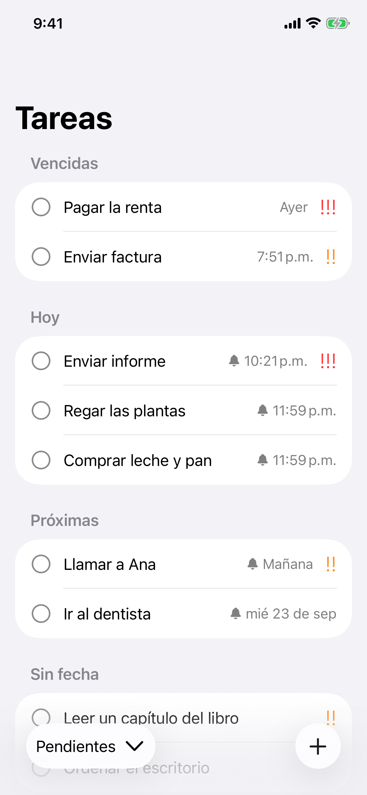
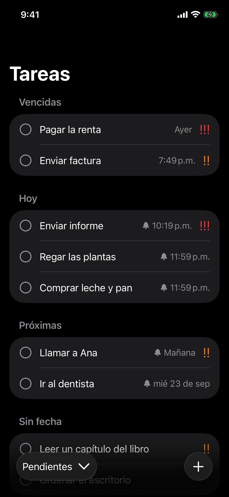
Cada tarea tiene título, notas, fecha y hora de vencimiento opcionales y prioridad baja, media o alta. Se borra deslizando la fila.
La vista principal agrupa en Vencidas, Hoy, Próximas y Sin fecha. Dentro de cada sección ordena por prioridad, luego por hora y luego por fecha de creación.
Al tocar el círculo, la tarea se marca, se tacha y sale de la lista. Un menú inferior cambia entre Pendientes y Completadas, y desde ahí se pueden reabrir con la animación inversa.
Una notificación por tarea, a su fecha y hora. Se cancela al completar o borrar, se reprograma al cambiar la fecha y vuelve a programarse al reabrir.
El permiso de notificaciones se pide al guardar la primera tarea con fecha. Si se deniega, la app sigue funcionando y explica cómo activarlo desde Ajustes.
Diseño de iOS 26 (Liquid Glass), tema claro y oscuro, fuentes dinámicas y etiquetas de accesibilidad.
Las animaciones de completar y reabrir una tarea, grabadas en el simulador de iPhone.
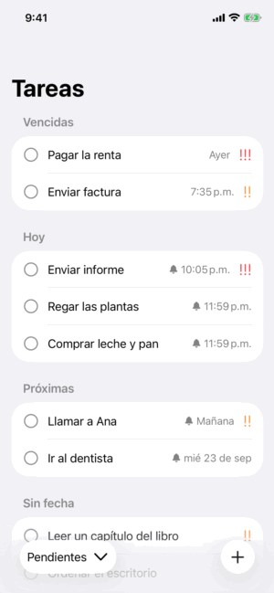
Palomita, tachado y salida de la fila.
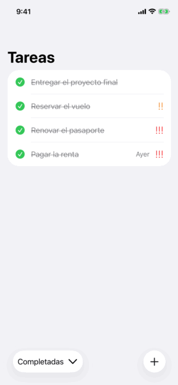
Se desmarca y regresa a Pendientes.
TodoItem)
UserNotifications,
locales
Las decisiones importantes están registradas como ADRs en el repositorio:
La lógica pura (secciones, orden, etiquetas de fecha y regla de recordatorios) está cubierta con pruebas. Las notificaciones se comprobaron además en un iPhone físico, con el teléfono bloqueado y con la app cerrada.
Las pantallas cambian de modo claro a oscuro con el interruptor de tema de la página. Desliza para ver todas.
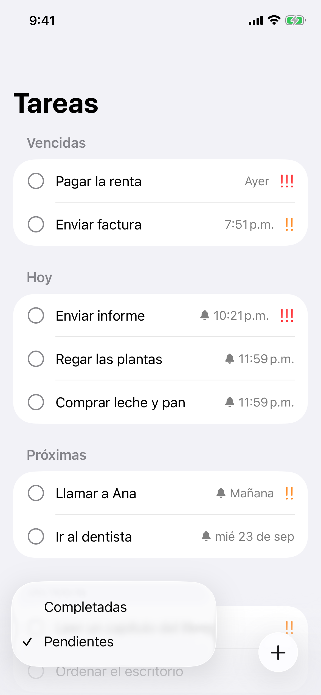
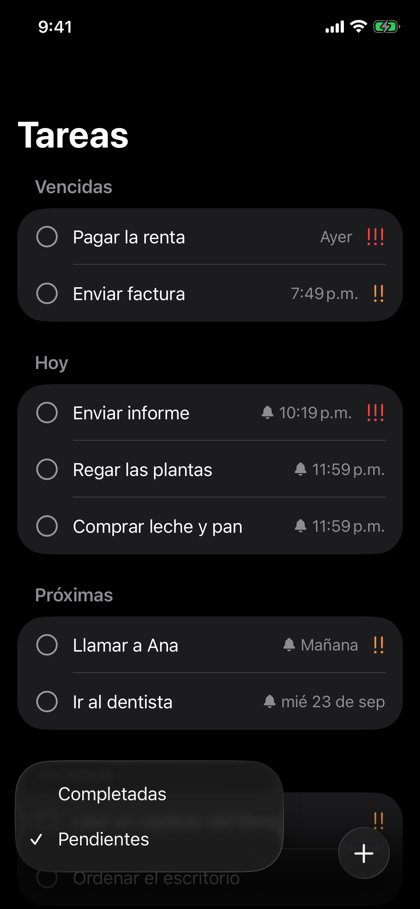
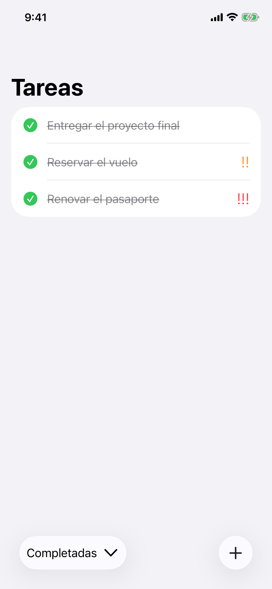
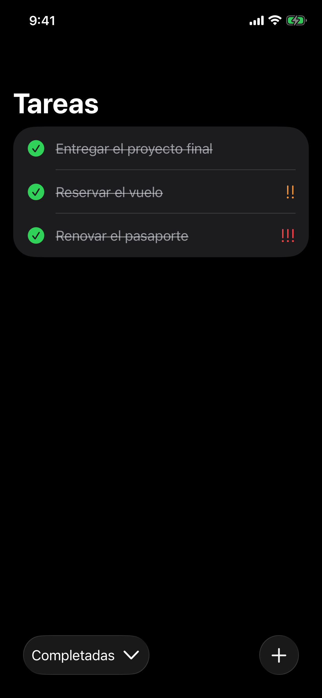
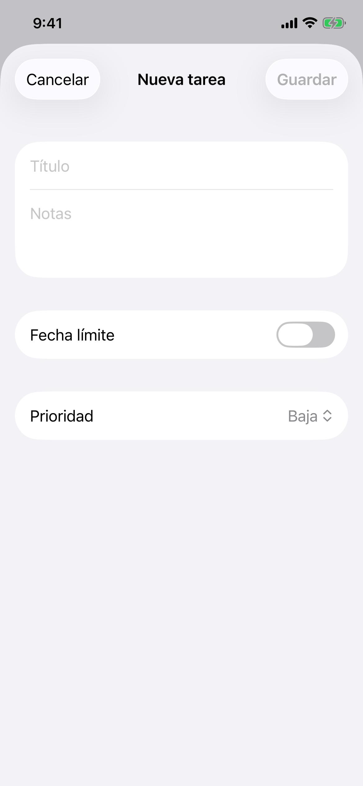
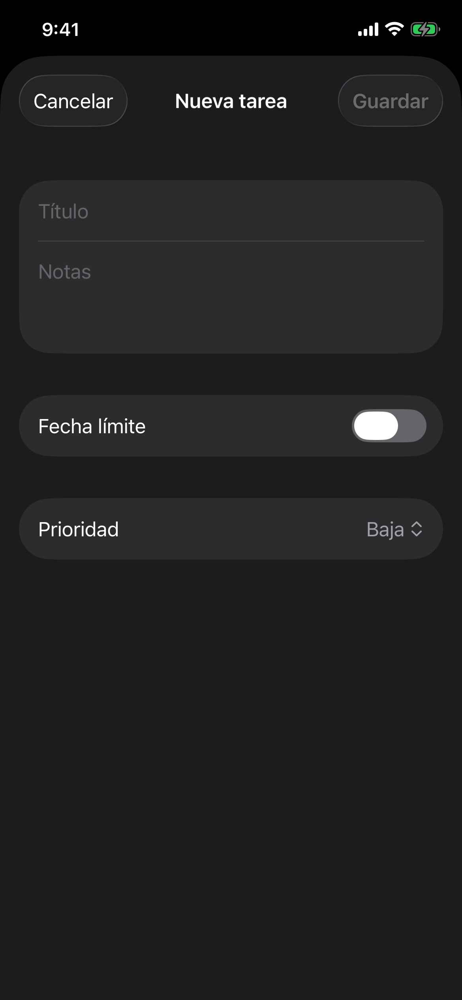
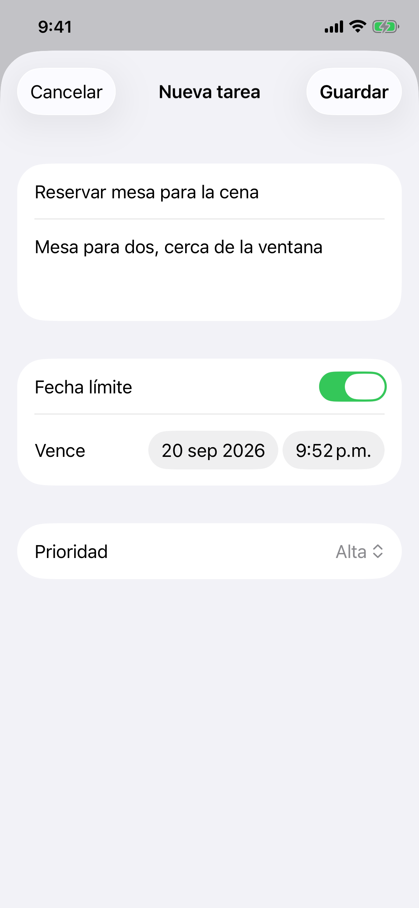
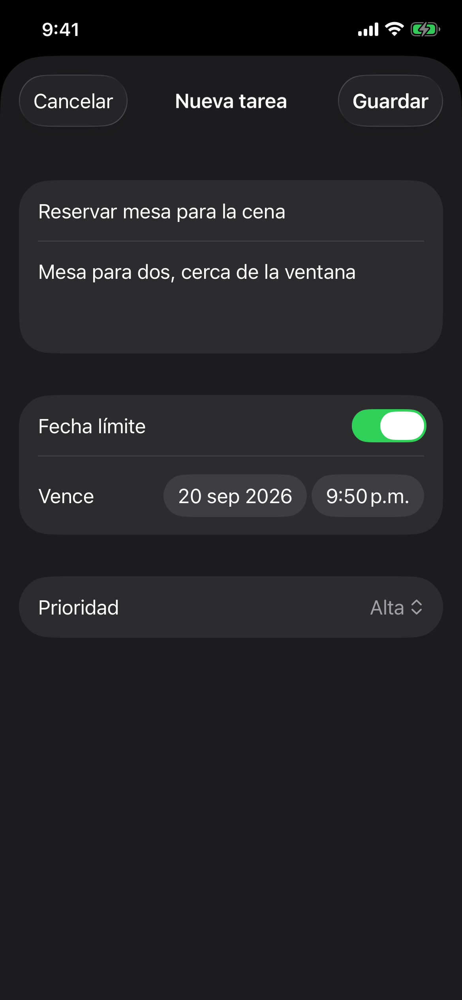
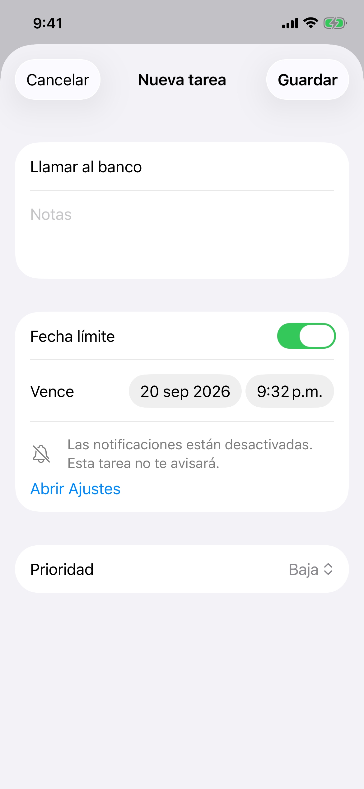
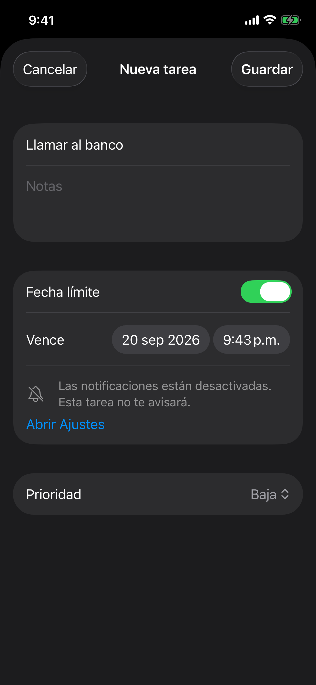
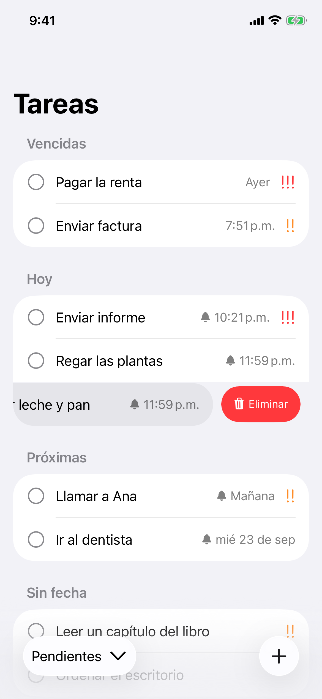
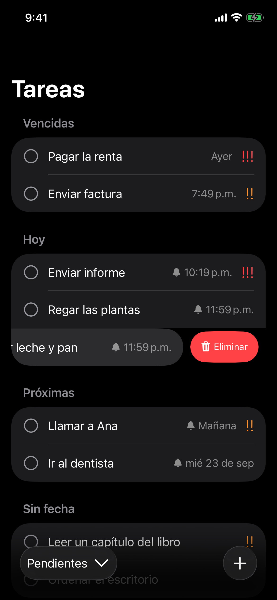
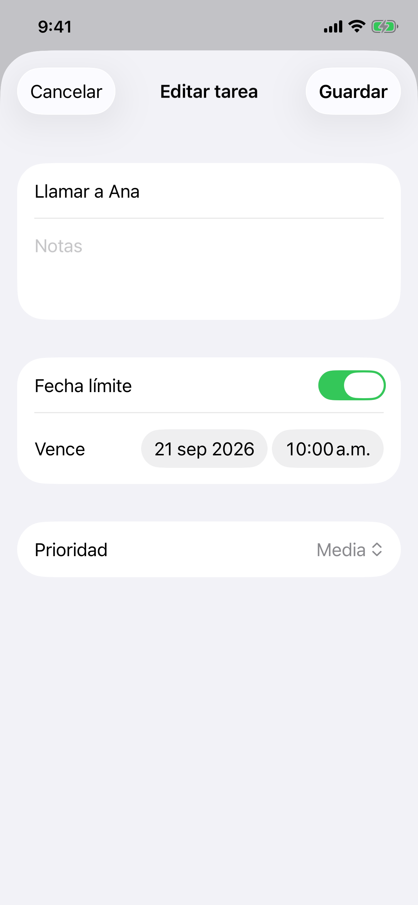
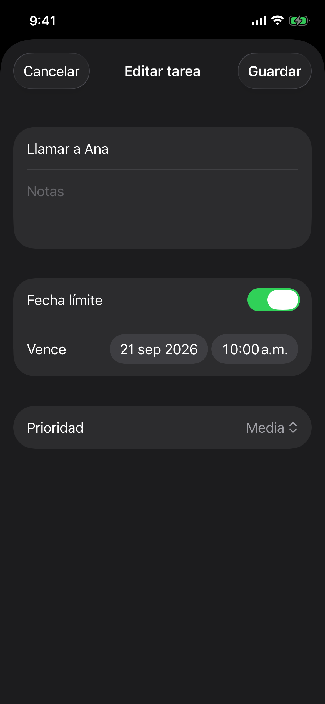
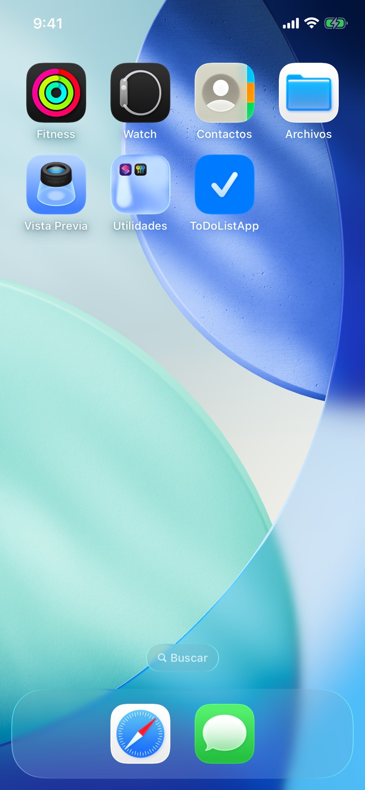
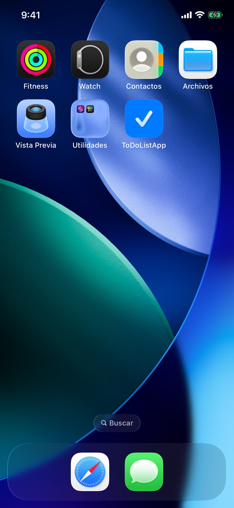
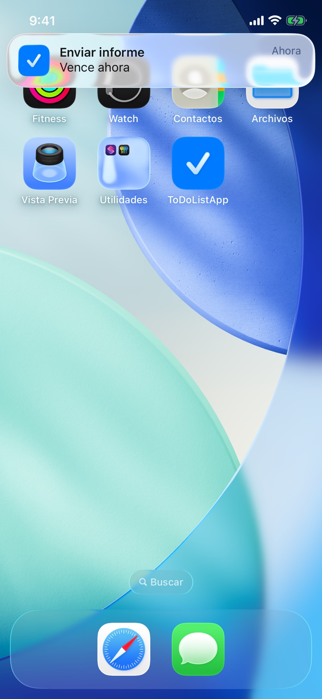
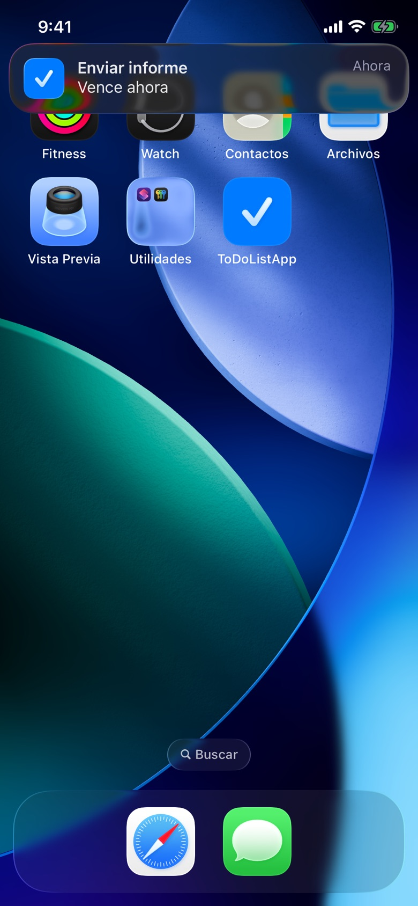
Capturas del simulador (iPhone 13 Pro, iOS 26) con tareas de ejemplo. El banner de notificación está simulado con el simulador; el recordatorio real se probó aparte en el iPhone físico.